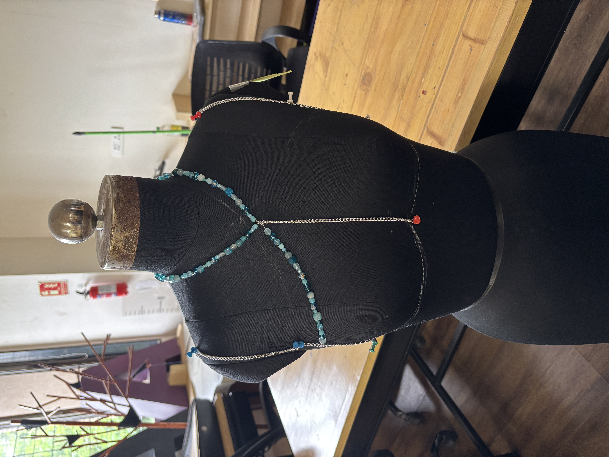
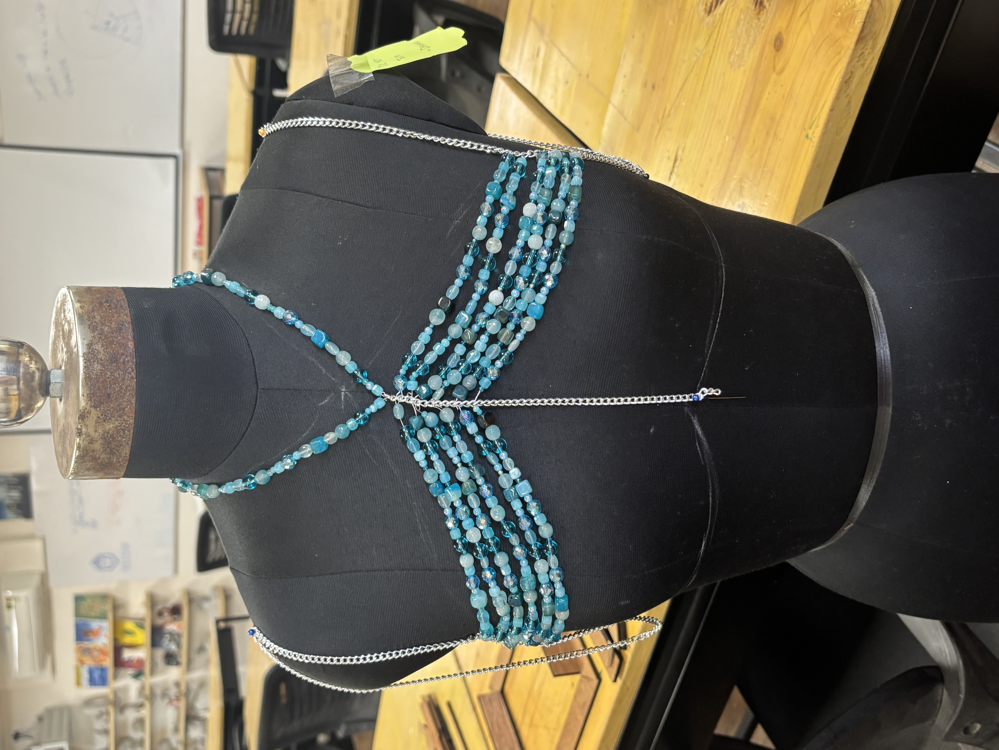
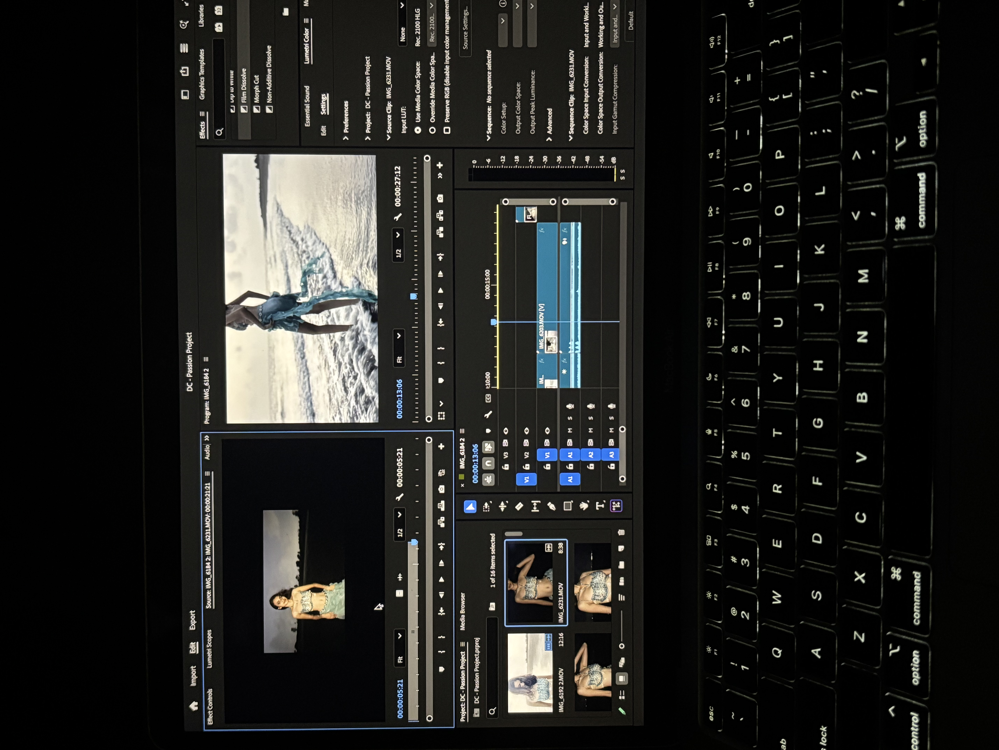

08 — The garment

From idea to garment.
I gradually translated the ideas of movement, fluidity and expression into the final garment.
A personal exploration in fashion, created to step outside my UI/UX practice and explore material, movement and self-expression through a physical garment.
The garment, in motion, on the shore that inspired it. The full film appears later in this story.
My work is usually rooted in UI/UX and digital experiences. For this project, I wanted to deliberately step into an unfamiliar medium and understand what happens when the design process becomes physical.
Instead of designing an interface, I wanted to experiment with material, silhouette, movement and expression.
I thought of this garment as a gentle rebellion: a way to celebrate the body without shame.
“In a culture that often defines decency by coverage, I chose to redefine it with confidence.”
I wanted to dissolve the line between tradition and expression, so the garment would not hide the body. It would honor it. The body is not a secret. It is a story.
Before I arrived at the final silhouette, I explored form, movement and fluidity as separate threads, then let them merge.
Before touching fabric, I let a handful of ideas set the emotional tone for everything that followed.
Moving from ideas to something physical meant figuring the garment out through material, construction and plenty of trial and error.


I gradually translated the ideas of movement, fluidity and expression into the final garment.
The garment was not the end of the experiment. I also explored how its movement, texture and silhouette could translate into film.

I had to experiment with how heavy, delicate beads could be supported without weighing down the garment.
The skirt turned out to be one of the hardest parts of the garment to construct.
The photoshoot pushed me outside my comfort zone.
I learned more about material choice for attaching beads securely.
I explored frill designs as a way to bring movement into the skirt.
I became more comfortable with posing and planning a shoot.
This project reminded me that design does not always begin with a screen. Sometimes it starts with material, movement, experimentation and simply figuring things out by hand.
Stepping outside UI/UX gave me a different way to think about form, interaction and experience.